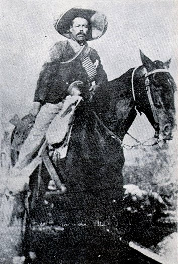

Pancho Villa (1887-1923)

General revolucionario mexicano. Su verdadero nombre es Doroteo Arango. Desde muy joven inicia una guerra en contra de la opresión de los campesinos, refugiándose en las montañas. En 1910 une sus fuerzas a Francisco I. Madero en contra del dictador Porfirio Díaz. Se une a las tropas de Venustiano Carranza después del asesinato de Madero, y ambos luchan contra el general Victoriano Huerta, que es derrotado en 1914. El 6 de diciembre de 1914 se apodera de la ciudad de México junto a Zapata. Villa desarrolla una guerra de guerrillas desde el norte del país que sigue hasta la muerte de Carranza seis años después. Con el presidente álvaro Obregón llega a un pacto por el que se retira de la política. Muere asesinado por sus enemigos en 1923.